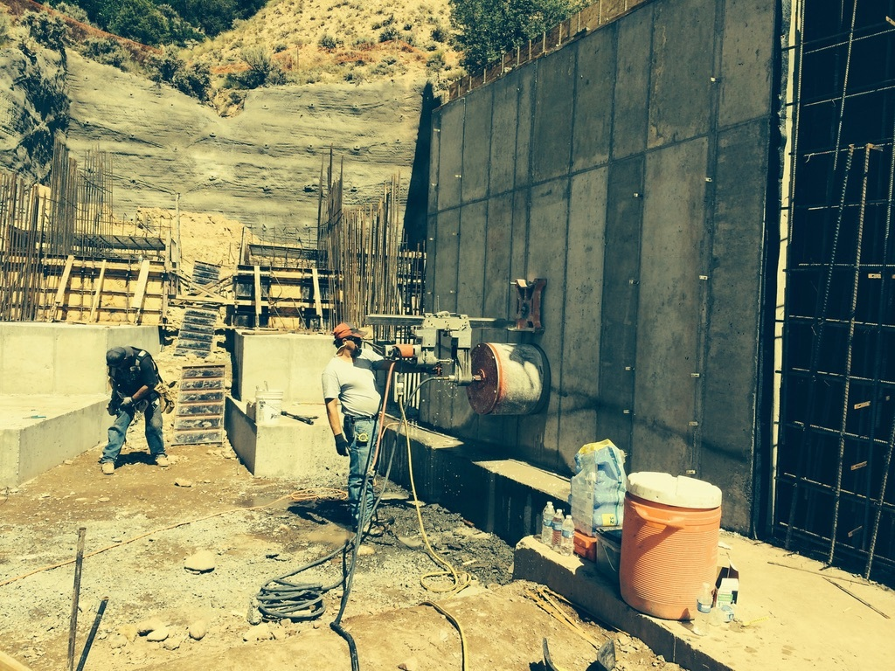
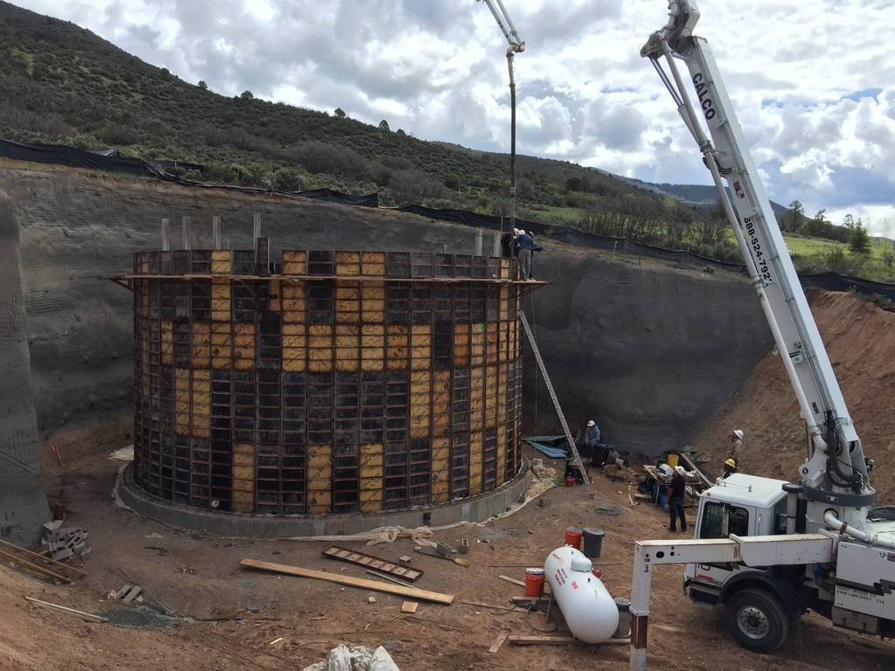
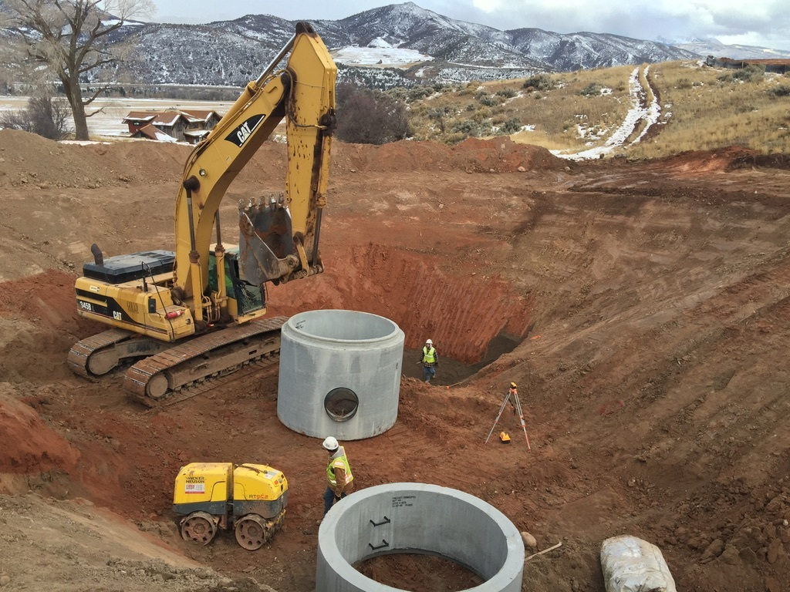
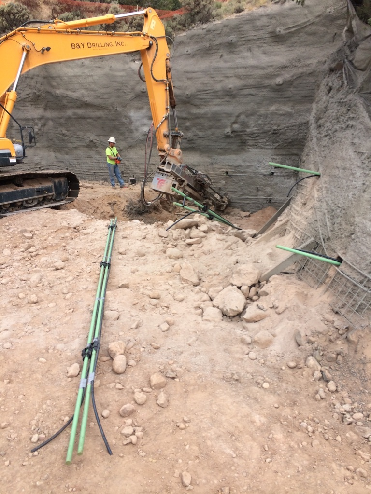
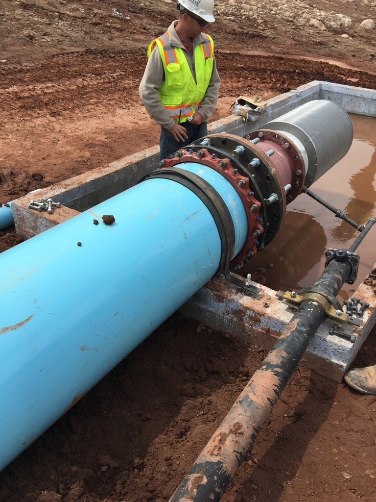
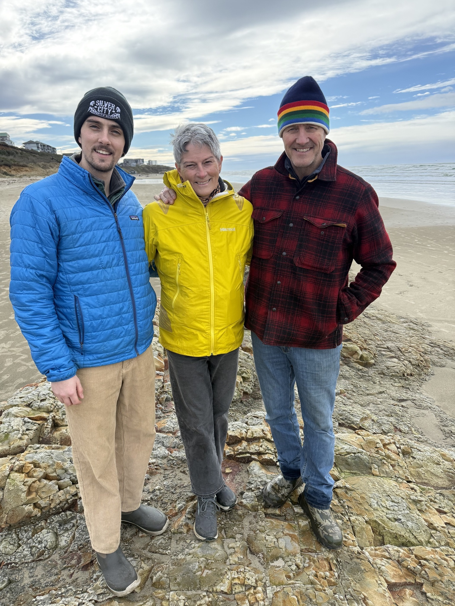
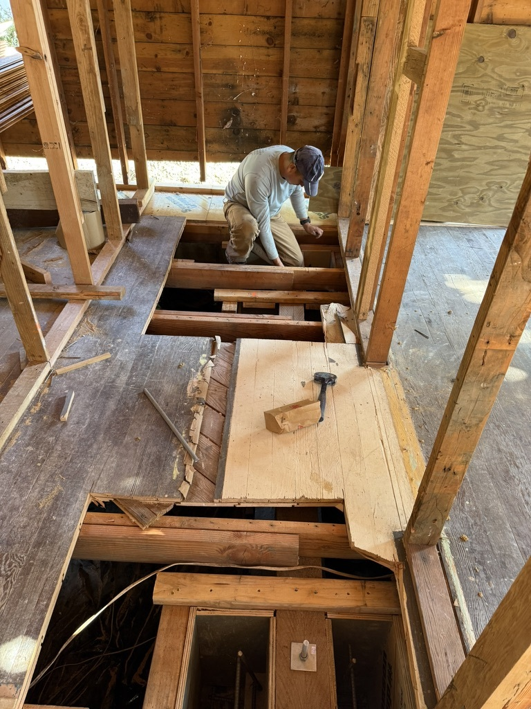
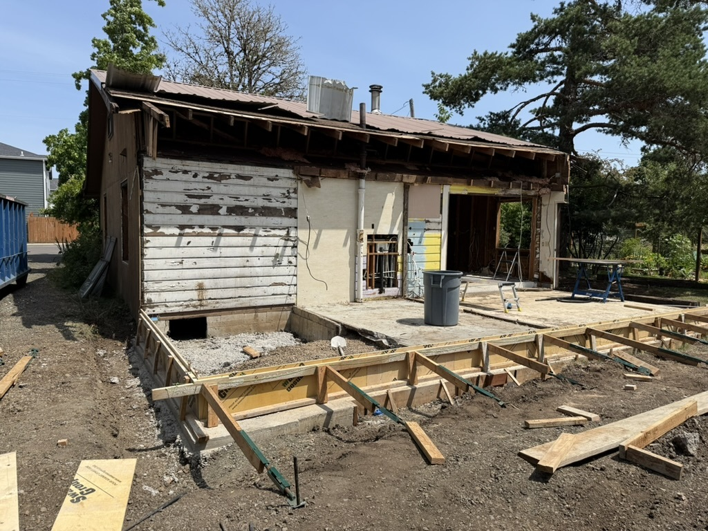
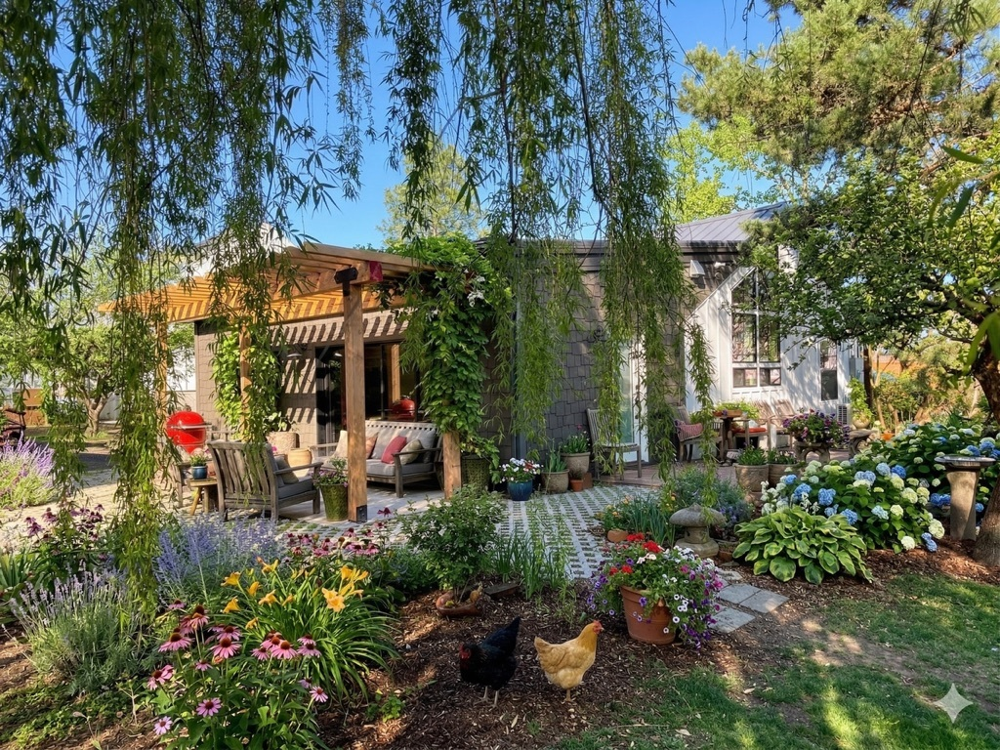

What I actually do
I'm an independent construction advisor and licensed general contractor. I do not have a crew of my own. That single fact changes everything about how I work for you.
Most contractors are trying to keep their crew busy and work to their experience and specialty. I offer a specialized service that fills that gap, backed by 40 years of judgment.
I don't have a crew. So when you call me about a foundation crack, a wet basement, a structural worry, or a house that won't pass inspection, I have no incentive to recommend the most expensive fix, or the fix my own team happens to be available for. I look at the problem. I tell you what it actually is. I tell you what it actually costs. Then I help you find the right pro to fix it. Or if you'd rather, I take it on as your builder.
The 40 years
I grew up in construction. By 1995, I was running high-end residential projects in Jackson, Wyoming, the kind of work where the budgets are large, the clients are sophisticated, and the consequences of a mistake are costly. From there I continued working in the custom home and resort space in Aspen, Colorado.
Resort construction teaches you things that production homebuilding cannot. It teaches you that the soil is rarely simple, that water is always trying to find your foundation, that the cheapest bid is usually the most expensive bid in disguise, and that the only thing standing between a beautiful project and a disaster is the judgment of the person managing it. That's the experience I brought to Oregon.
Field Work. Aspen & Jackson Hole

Hillside retaining wallCast-in-place reinforced concrete against a rock cut. Roaring Fork Valley.

Property water cisternCast-in-place circular cistern formwork and pour. Pitkin County.

Ranch cistern installPrecast cistern placement and site work, winter. Aspen area ranch.

Hillside stabilizationDrilled rock anchors / micropiles on a cut hillside lot.

Drainage ReservoirIntake pipe with spin filter.
Why I'm in Oregon

With Blaire and WesleyNewport, Oregon · Spring 2026
I'm currently developing a cottage cluster project in Philomath, Oregon, an 18-unit micro-resort I designed from the ground up. The Willamette Valley reminded me of the early Aspen years. A real community, real homes, real problems that deserve real answers.
What I found in the Mid-Willamette market is that most homeowners would benefit from a comprehensive solution to common site, water, and other remediation issues. The local design-build firms naturally focus on kitchens and bathrooms. The specialist trades are excellent at their specific work. But there was a need for taking a generalist approach that identifies and manages the best path forward. So I started doing that.
Field Work. Oregon

Floor-system surgeryOpening up the floor system to fix what was hiding underneath.

Foundation RepairPhilomath, Oregon. Mid-construction.

Full RestorationPhilomath, Oregon. Landscape side.
Lived inPhilomath, Oregon. Porch detail.
How I'm different from a remodeler
I take on the complex work most would like to avoid, backed by forty years of experience solving tough problems, specifically what's wrong, what it really costs, who should fix it, and what to watch for so it doesn't go sideways.
You can hire me three ways.
- Property Advisor. A single visit, a written assessment, a real number for what it costs to fix. Often the only conversation you need.
- Owner's Representative. You stay in charge of the project. I plan it, find the right subs, watch the work, and report every dollar. You see everything.
- Licensed General Contractor. You want one person to own the whole job. I take it on under Aspen Custom Ranch Enterprises, LLC, fully licensed and insured.
Same approach, three levels of involvement. You pick.
The boring credentials
- Aspen Custom Ranch Enterprises, LLC. The legal entity that holds the license and the insurance.
- Oregon CCB# 250993. Licensed general contractor in the State of Oregon.
- Licensed & Insured. Liability and workers comp on every project.
- Forty years in residential construction, predominantly high-end resort and custom homes.